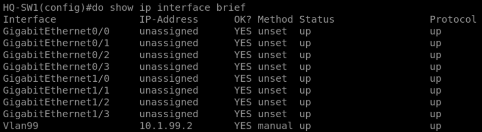
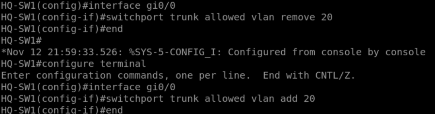
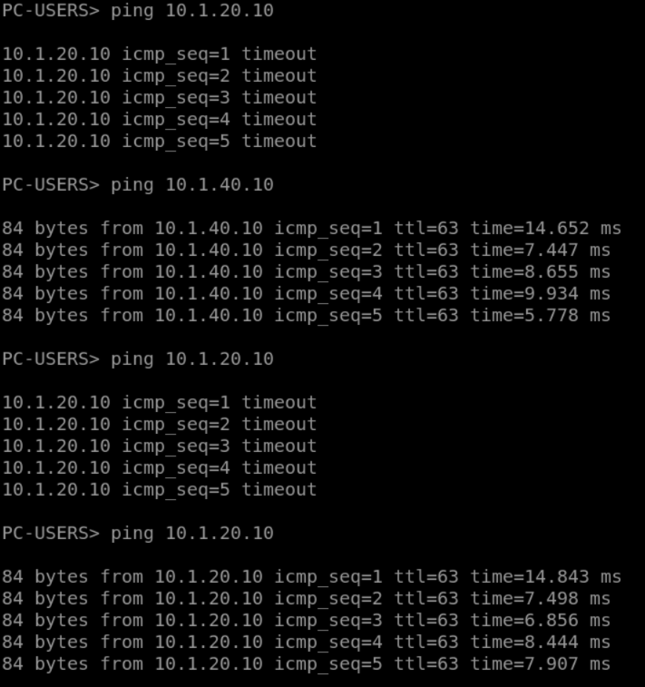

Demo: HQ Network in Action
A step-by-step look at the working headquarters network and the tests that prove it works.
The Network
This demo walks through the headquarters (HQ) network I built in EVE-NG with real Cisco router and switch software, and the tests that prove it works. It takes about 5 minutes to read. Each step shows the actual output from the lab.
The HQ network has one router (HQ-R1), one switch (HQ-SW1), and test PCs in three different VLANs. The switch keeps the VLANs separate, and the router connects them, so each group of devices is its own network but they can still reach each other when they need to.
HQ-R1 (router)
|
| one cable carrying all VLANs (802.1Q trunk)
|
HQ-SW1 (switch)
___________|___________
| | |
PC-USERS PC-SERVERS PC-GUEST
VLAN 10 VLAN 20 VLAN 40
10.1.10.10 10.1.20.10 10.1.40.10
Step 1: Separate the Devices into VLANs

The switch is divided into VLANs: users, servers, voice, guests, and management. Each PC is plugged into a port that belongs to exactly one VLAN, so a visitor on the guest network is on a different network from the company's servers, even though they share the same switch.

Each port's mode is set by hand ("static access"), with negotiation turned off. Otherwise, a device pretending to be a switch could trick the port into giving it access to every VLAN.
Step 2: Carry Every VLAN to the Router

The router needs to reach every VLAN, but it only has one cable to the switch. That cable is a trunk: each frame gets a small tag saying which VLAN it belongs to. Two security choices are visible here: only the VLANs HQ actually uses are allowed, and the "native" VLAN (whose traffic travels untagged) is moved to VLAN 999, which has no devices on it.
Step 3: Give the Switch a Management Address

A switch doesn't need an IP address to do its job, but administrators and automation scripts need one to log in to it. The management address lives on VLAN 99, apart from user traffic. This is the address the Python scripts will use in the next phase of the project.
Step 4: Route Between the VLANs
On the router, the single trunk port is split into subinterfaces, one per VLAN. Each subinterface handles only frames tagged with its VLAN and acts as that VLAN's default gateway (10.1.10.1 for users, 10.1.20.1 for servers, and so on). Using one router port this way is called router-on-a-stick.

Step 5: Test It

A PC in the users VLAN can reach its gateway, a server in VLAN 20, and a guest PC in VLAN 40. Two details prove the traffic really goes through the router:
- The TTL numbers. Every router a packet passes through lowers its TTL by 1. The PCs start at 64, so replies from other VLANs arriving with 63 crossed exactly one router. The gateway answers with 255 because the router creates its own replies.
- The trace. Hop 1 is the router (10.1.10.1), and hop 2 is the server. The "port unreachable" message on the last hop is normal: it's how trace knows it arrived.
Step 6: Break It on Purpose


Good tests should catch real mistakes, not just confirm that things work. Here, the server VLAN is removed from the trunk, which is a common real-world misconfiguration. Pings to the server VLAN fail while the guest VLAN keeps working, which is exactly the predicted result. Adding VLAN 20 back restores the connection.
What's Next
Every step above comes from the Module 1 build guide, which explains each command line by line and ends with a troubleshooting table. Coming next:
- A branch office connected through a simulated internet provider, with OSPF routing between the offices
- A Linux server providing DHCP and DNS for both offices
- Python scripts that configure, back up, and automatically test the network
- Next quarter: firewall, access control lists, VPNs, and a monitoring dashboard
Thank you for reading! Please share your feedback in the survey: Stakeholder Survey #2.